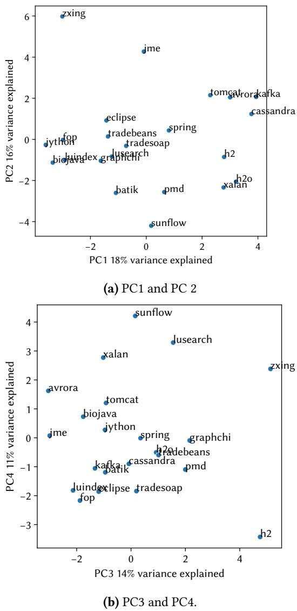
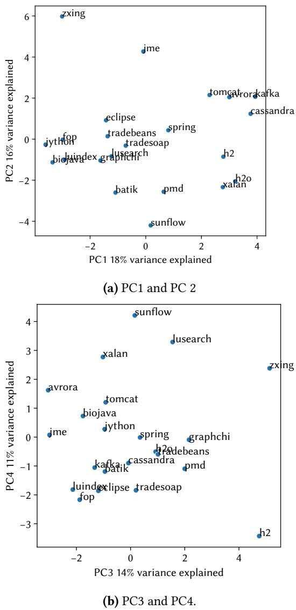

Rethinking Java Performance Analysis 通俗讲解¶
0. 整体创新点通俗解读¶
痛点直击 (The "Why")
这篇论文的核心关切，不是某个具体技术的优化，而是一个更根本、更危险的系统性问题：我们的性能分析方法论已经严重滞后于技术创新的速度了。这导致了一个可怕的后果——整个研究社区可能在“盲人摸象”，对一些重大的、普遍存在的性能退化（比如现代垃圾回收器高达 15%-63% 的 CPU 开销）集体失明。
- 之前的性能分析实践存在几个致命的“盲点”：
- 忽视时间-空间权衡：评估垃圾回收器时，只在一个固定的、通常是“慷慨”的堆大小下测试，完全忽略了内存受限场景下的灾难性表现（如图1所示，在小堆上开销可超 2倍）。
- 误用延迟指标：用简单的 GC Pause Time（垃圾回收暂停时间）来代表用户体验延迟，这就像用“单次堵车时长”来衡量你一天的通勤体验一样荒谬。多个短暂停顿对流畅度的破坏可能比一次长暂停更严重。
- 忽略总计算开销：在多核时代，只看 Wall Clock Time（挂钟时间），却无视 Total CPU Time（所有线程消耗的总CPU时间）。一个利用了所有空闲核心的回收器可能让程序跑得更快（Wall Clock低），但却吃掉了本可以服务其他任务的宝贵计算资源。
- 缺乏有代表性的负载：旧的基准测试套件（如老版DaCapo）中的应用早已过时，无法反映当今从移动端到数据中心的真实Java应用场景。
通俗比方 (The Analogy)
想象一下，汽车工业在飞速发展，工程师们不断设计出更快、更省油的新引擎（创新的垃圾回收器）。但是，负责给这些引擎做评测的机构（性能分析方法论）却还在用二十年前的老路、老标准、老测试车（过时的基准和方法）来打分。
- 他们只在一条宽阔、平坦、没有其他车辆的高速公路上测试（固定大堆内存），却不去看引擎在拥堵的城市街道（小堆内存）里会不会熄火。
- 他们只关心从A点到B点的总耗时（Wall Clock Time），却不管这辆车是不是一路狂按喇叭、频繁急刹，把旁边车道的司机都逼疯了（高Total CPU开销影响同机其他服务）。
- 他们甚至用引擎空转时的最大噪音分贝（GC Pause Time）来判断乘坐舒适度，而不是让真人坐进去感受全程的颠簸和顿挫（User-Experienced Latency）。
结果就是，评测报告一片大好，但消费者（生产环境）拿到新车后却发现，它在真实世界里又吵又费油，还动不动就抛锚。这篇论文要做的，就是重建一整套现代化的汽车评测体系。
关键一招 (The "How")
作者并没有仅仅停留在批判层面，而是通过三位一体的贡献，系统性地解决了上述问题：
-
刷新“测试车”：推出了 DaCapo Chopin 基准套件。这不是简单的更新，而是彻底重造。它包含了 22个 全新的或深度刷新的工作负载，覆盖了从 5MB 到 20GB 堆内存的广阔范围，并特别加入了 9个 对延迟敏感的现代应用（如基于Spring、Kafka的服务）。更重要的是，它为每个负载提供了 47个维度 的“体检报告”（Nominal Statistics），并通过 PCA（主成分分析）证明了这些负载的多样性，确保评测不会偏颇。
-
发明新“评测工具”：针对延迟这个老大难问题，论文摒弃了传统的GC Pause指标，直接测量用户真实感受到的延迟（User-Experienced Latency）。它提出了 Simple Latency（记录每个请求/帧的实际耗时）和更精妙的 Metered Latency（模拟请求队列效应，将GC暂停造成的连锁延迟也计算在内）这两个内置指标，让延迟评估变得直观且真实。
-
建立新“评测标准”：论文明确提出了几条硬性方法论建议，例如必须在一系列堆大小（以最小堆的倍数为单位）下评估回收器，必须同时报告 Wall Clock 和 Total CPU 开销，并采用 LBO（Lower Bound Overhead）方法来更准确地剥离和量化GC的真实成本。
 (b) Lower bound total CPU overheads (Linux TASK_CLOCK). Figure 1. Lower bounds on the overheads of five OpenJDK 21 production garbage collectors with their default settings, as a function of heap size, showing the geometric mean of overhead over all 22 DaCapo Chopin benchmarks. We only plot data points where the respective collector can run all 22 benchmarks to completion. In the best case, wall clock overheads are 9 % (G1 and Parallel) and total CPU overheads are 15 % (Serial). At smaller heaps, overheads exceed 2×.
(b) Lower bound total CPU overheads (Linux TASK_CLOCK). Figure 1. Lower bounds on the overheads of five OpenJDK 21 production garbage collectors with their default settings, as a function of heap size, showing the geometric mean of overhead over all 22 DaCapo Chopin benchmarks. We only plot data points where the respective collector can run all 22 benchmarks to completion. In the best case, wall clock overheads are 9 % (G1 and Parallel) and total CPU overheads are 15 % (Serial). At smaller heaps, overheads exceed 2×.
 Figure 3. DaCapo Chopin records the time for each event for its latency-sensitive workloads, avoiding the need for users to resort to using misleading proxies such as GC pause times. These figures plot the distribution of request latencies for cassandra for each of OpenJDK 21’s five production collectors, with the 95th percentile indicated by the shaded area. Even at the generous 6.0× heap, the newer collectors do not deliver better latency than G1 on this workload.
 Figure 4. Principal components analysis of the 22 DaCapo workloads with respect to the 33 nominal statistics which had non-null results for all benchmarks.
Figure 3. DaCapo Chopin records the time for each event for its latency-sensitive workloads, avoiding the need for users to resort to using misleading proxies such as GC pause times. These figures plot the distribution of request latencies for cassandra for each of OpenJDK 21’s five production collectors, with the 95th percentile indicated by the shaded area. Even at the generous 6.0× heap, the newer collectors do not deliver better latency than G1 on this workload.
 Figure 4. Principal components analysis of the 22 DaCapo workloads with respect to the 33 nominal statistics which had non-null results for all benchmarks.
总而言之，这篇论文的巧妙之处在于，它没有去争论哪个垃圾回收器更好，而是先质疑并重建了我们用来做判断的那把尺子。它提供了一套完整的、现代化的、开源的“性能分析基础设施”，旨在将整个领域的经验主义研究拉回到一个更严谨、更贴近现实的轨道上来。
1. DaCapo Chopin Benchmark Suite (ELI5)¶
痛点直击
- 以前的Java性能分析方法论已经严重“掉队”了。具体来说，有四大“很难受”的地方：
- 忽视时间-空间权衡：很多研究只在一个固定堆大小下测GC（垃圾回收器），完全忽略了GC的核心特性——内存越小，CPU开销越大。这就像只在高速公路上测试汽车油耗，却从不在拥堵市区开，结果自然失真。
- 用错延迟指标：大家还在用“GC暂停时间”这种内部指标来代表用户体验的延迟。这完全是两码事！一个应用可能被很多次短暂停顿打断，导致整体卡顿，但单次暂停时间看起来很短。这就像只看快递员每次敲门的时间，却不管他一天来敲十几次，让你根本没法专心工作。
- 只看墙钟时间：在多核时代，只关心程序跑完花了多少“墙钟时间”是片面的。一个GC可能把所有CPU核心都占满了，虽然自己跑得快（墙钟时间短），但把其他应用的资源全抢光了。这在服务器、手机等多租户场景下是灾难性的。
- 工作负载过时且单一：老的基准测试套件（如旧版DaCapo）里的程序太老了，不能反映现代Java应用（比如基于Spring、Kafka的微服务）的真实行为，导致研究结论脱离实际。
通俗比方
- 你可以把DaCapo Chopin想象成一个为Java世界量身打造的、极其详尽的“体检中心”。
- 以前的体检中心只有几个基础项目（比如量身高、称体重），而且用的还是十年前的标准。
- 而DaCapo Chopin这个新体检中心，不仅引入了22个全新的、来自真实世界的“病人”（工作负载），覆盖了从手机App到大型服务器的各种场景；还给每个“病人”建立了47维度的详细健康档案（Nominal Statistics）。这份档案告诉你这个“病人”是“易胖体质”（对堆大小敏感）还是“心脏脆弱”（对缓存大小敏感）等等。
- 更重要的是，它不只给你一个笼统的“健康”或“不健康”结论，而是提供了正确的检查方法。比如，要评估“心脏”（GC）问题，它会强制你在不同“运动强度”（堆大小）下做心电图，并且直接测量你跑步时的真实感受（用户延迟），而不是只看心跳停了几秒。
关键一招
- DaCapo Chopin的成功不在于发明了什么新算法，而在于系统性地解决了上述方法论的缺失。它的核心创新点体现在三个层面：
- 工作负载的全面革新：
- 它不是简单地更新旧程序，而是引入了8个全新的、基于现代框架（如Spring, Cassandra, Kafka）的工作负载，并彻底刷新了其余所有旧负载。
- 这些负载的最小堆大小跨度极大（5MB到20GB），天然地迫使研究者去探索时间-空间权衡。
- 特别包含了9个延迟敏感型工作负载，为正确评估用户体验延迟提供了基础。
- 内置科学的度量方法：
- 抛弃GC暂停时间，转而直接测量Simple Latency（记录每个请求/帧的实际耗时）和更贴近现实的Metered Latency（模拟请求排队效应，能捕捉到GC造成的连锁延迟）。
- 全面采用Lower Bound Overhead (LBO) 方法来评估GC开销，同时报告Wall Clock（端到端时间）和Task Clock（总CPU消耗）两种指标，揭示了被墙钟时间掩盖的资源争用问题。
- 提供深度的工作负载画像：
- 通过47个维度的Nominal Statistics（如分配率ARA、对编译器的敏感度PCC、对LLC的敏感度PLS等），为每个工作负载打上详细的“标签”。
- 利用主成分分析（PCA）（见下图）证明了这22个工作负载在行为上具有高度的多样性，避免了基准测试套件内部的冗余，确保了评估结果的全面性和代表性。
- 工作负载的全面革新：
Figure 4. Principal components analysis of the 22 DaCapo workloads with respect to the 33 nominal statistics which had non-null results for all benchmarks.
2. Lower Bound Overhead (LBO) Methodology (ELI5)¶
痛点直击 (The "Why")
- 评估 Garbage Collection (GC) 的真实开销是个老大难问题。传统方法要么只看 GC pause time（停顿时间），要么只看总的 wall-clock time（挂钟时间）。但这两种方法都严重失真。
- 只看停顿时间：完全忽略了那些和应用线程并发执行的GC工作，以及无处不在的 write barrier（写屏障）等细粒度开销。这些开销虽然不造成“停顿”，但会实实在在地拖慢你的应用。
- 只看总时间：你看到的是一个“黑盒”结果。你无法区分多出来的那部分时间，到底有多少是GC造成的，又有多少是JIT编译、操作系统调度或其他噪音带来的。这导致我们根本不知道GC的真实“税”有多重。
- 简单说，以前的方法要么 顾头不顾尾（只看停顿），要么 一笔糊涂账（只看总时间），让我们对GC性能的判断长期处于“盲人摸象”的状态。
通俗比方 (The Analogy)
- 想象你要评估一辆混动汽车的真实油耗。这辆车有发动机（你的应用）和电动机（GC），它们可以同时工作。
- 错误方法1：你只记录发动机熄火、纯靠电动机行驶的时间（类比 GC pause time）。这显然不行，因为大部分时候发动机和电动机是一起工作的。
- 错误方法2：你只看从A点到B点的总耗油量（类比 wall-clock time）。但这个数据包含了堵车、开空调等各种因素，你没法单独剥离出“因为用了混动系统”而多消耗的油。
- LBO的思路：作者说，我们先假设存在一辆完美的、零油耗的混动车（理想GC）。虽然这车不存在，但我们可以通过测试所有现有的混动车型（各种真实GC），找出其中综合效率最高的那一辆。这辆车的油耗，就是对“完美混动车”油耗的一个最保守的估计（即下限）。然后，其他所有车型的油耗减去这个“基线油耗”，得到的就是它们相对于理想情况的最低额外开销。
关键一招 (The "How")
- 作者并没有试图直接测量GC的所有开销（这几乎不可能），而是巧妙地构建了一个可计算的、保守的基线。
- 具体操作分两步走：
- 第一步：归因与剥离。他们利用JVM的 JVMTI 接口，精确捕获每个GC的 stop-the-world 阶段所消耗的时间。将这个时间从该次运行的总时间中减去，剩下的部分就被近似看作是“纯应用”的开销。
- 第二步：寻找最佳基线。他们用多种不同的GC（Serial, Parallel, G1, Shenandoah, ZGC）在多个堆大小下跑同一个程序，对每次运行都执行第一步的操作。然后，在所有这些“剥离后”的应用开销中，选出最小的那个值。这个最小值，就是他们对“理想零开销GC”下应用运行时间的最佳（也是最保守的）估计。
- 最终，任何一个具体GC配置下的总开销，减去这个基线开销，就得到了该GC的 Lower Bound Overhead (LBO)。之所以叫“下限”，是因为这个基线本身已经包含了未被剥离的并发GC开销和屏障开销，所以它比真正的“零开销”要高，从而使得计算出的开销是一个保守的下限估计。
- 这个方法的精妙之处在于，它用一种透明、可复现的方式，把那些最难测量的、细粒度的、并发的GC开销，也一并纳入了考量范围，从而揭示了GC真实的总计算成本，正如论文图1(b)所示。
(b) Lower bound total CPU overheads (Linux TASK_CLOCK). Figure 1. Lower bounds on the overheads of five OpenJDK 21 production garbage collectors with their default settings, as a function of heap size, showing the geometric mean of overhead over all 22 DaCapo Chopin benchmarks. We only plot data points where the respective collector can run all 22 benchmarks to completion. In the best case, wall clock overheads are 9 % (G1 and Parallel) and total CPU overheads are 15 % (Serial). At smaller heaps, overheads exceed 2×.
3. User-Experienced Latency Metrics (ELI5)¶
痛点直击
- 以前评估Java垃圾回收器（GC）的延迟时，大家普遍用一个偷懒的办法：直接看 GC暂停时间（GC pause time）。这在今天看来是个巨大的误区。
- 这个做法“很难受”在哪？它完全忽略了用户的真实体验。想象一下，一个应用可能没有一次超长的卡顿，但它频繁地、短促地“打嗝”，这种体验对用户来说同样糟糕，甚至更糟，因为它破坏了操作的流畅感。GC暂停时间 只能告诉你“世界停止了多久”，但无法告诉你用户的请求或操作到底被耽误了多久。
- 更要命的是，现代低延迟GC（如Shenandoah, ZGC）的设计目标就是消除长暂停，把工作分散到后台去做。结果用 GC暂停时间 这个指标去衡量它们，会得出“性能完美”的错误结论，而实际上这些后台工作可能严重拖慢了应用本身的处理速度，用户感知的延迟依然很高。
 Figure 2. Cheng and Blelloch [12] used a figure like this to illustrate the problem with using GC pauses as a measure of responsiveness and proposed the minimum mutator utilization (MMU) metric as a response. GC pause time continues to be widely (mis)used as a proxy for responsiveness more than twenty years later.
Figure 2. Cheng and Blelloch [12] used a figure like this to illustrate the problem with using GC pauses as a measure of responsiveness and proposed the minimum mutator utilization (MMU) metric as a response. GC pause time continues to be widely (mis)used as a proxy for responsiveness more than twenty years later.
通俗比方
- 这就像评价一个快递员的服务质量，你不去问客户“从下单到收货等了多久”，反而去问快递公司“快递员在路上堵车停了多久”。这两者根本不是一回事！
- Simple Latency 就像是直接给每个客户发问卷：“亲，您这次从点击下单到看到‘送达’提示，总共花了多少秒？”
- Metered Latency 则更进一步，它模拟了一个有排队系统的场景。即使你的系统内部是单线程处理请求（没有真实队列），它也会假设所有请求是匀速到达的。如果因为GC导致前面的请求变慢了，那么后面所有本该按时开始处理的请求都会被连累，它们的等待时间都会被算进去。这就像是，虽然快递站只有一个窗口，但我们会计算如果外面排着队，每个人因为前面的人耽搁而多等的时间。
关键一招
- 作者没有再去和GC日志里的暂停时间较劲，而是直接在应用层面埋点，从根本上改变了测量对象。
- Simple Latency 的核心逻辑是：
- 对于游戏类应用（如jme），记录每一帧的开始渲染和结束渲染时间戳。
- 对于服务类应用（如spring, cassandra），记录每一个客户端请求的开始处理和结束处理时间戳。
- 最终得到的是一个真实的、端到端的事件耗时分布，这才是用户真正感受到的延迟。
- Metered Latency 的巧妙之处在于引入了“假设的均匀到达时间”：
- 它先记录下每个事件真实的开始和结束时间。
- 然后，它假设所有事件是在整个运行期间均匀到达的，并为每个事件计算出一个“理想开始时间”。
- 一个事件的 Metered Latency 被定义为：
结束时间 - min(真实开始时间, 理想开始时间)。 - 这个
min操作是精髓。它意味着，一旦系统因为GC等原因变慢，后续事件的真实开始时间就会晚于其理想开始时间。此时，延迟的计算就从“理想开始时间”算起，从而将前面事件的延迟“传导”给了后面的事件，模拟了真实队列中的级联效应。
4. Nominal Statistics and Workload Characterization (ELI5)¶
痛点直击 (The "Why")
- 以前搞性能分析，就像蒙着眼睛打架。大家手里的基准测试（benchmarks）就是个黑盒子：你只知道它跑得快或慢，但完全不知道它“脾气”如何。
- 具体来说，研究者面临几个“很难受”的问题：
- 堆大小乱设：评估垃圾回收器（GC）时，随便给个
-Xmx4G，但这个值对某个 workload 可能是绰绰有余，对另一个却是捉襟见肘，导致结果毫无可比性。 - 归因困难：看到一个优化在
lusearch上有效，在h2上无效，只能瞎猜原因。是因为分配率高？还是对缓存敏感？缺乏数据支撑，讨论就变成了“我觉得”。 - 工作负载同质化：很多 benchmark suite 看似多样，实则内核相似（比如都是高分配、低计算），导致评估结果有巨大盲区，无法反映真实世界的复杂性。
- 堆大小乱设：评估垃圾回收器（GC）时，随便给个
通俗比方 (The Analogy)
- 这套 Nominal Statistics 机制，就像是给每个基准测试做了一次全面的“体检”，并生成了一份标准化的“健康档案”。
- 想象一下你是个教练，手下有一群运动员（workloads）。以前你只知道他们在100米跑的成绩（总执行时间）。现在，你的档案里详细记录了每个人的：
- 最大摄氧量（对应 ARA, Allocation Rate）
- 肌肉纤维类型（对应 UIP, Instructions Per Cycle）
- 对高海拔的耐受度（对应 PLS, sensitivity to Last-level Cache size）
- 基础代谢率（对应 GMD, Minimum Heap Size）
- 有了这份档案，你就能精准地为不同目标（比如训练耐力 vs. 爆发力）挑选最合适的运动员，或者当一个运动员成绩下滑时，能快速定位是心肺问题还是肌肉问题。
关键一招 (The "How")
- 作者没有停留在传统的、JVM中立的简单指标（如总分配字节数），而是做了一个大胆且务实的转变：在一个固定的、主流的生产环境（OpenJDK 21 + G1 GC）下，系统性地测量每个 workload 对各种软硬件扰动的敏感性。
- 这个巧妙的逻辑转换体现在：
- 从绝对值到相对排名：不纠结于
lusearch的分配率到底是 23556 MB/s 还是 24000 MB/s，而是告诉你它在所有22个 workload 里是第一名（得分 10）。这使得不同量纲的指标可以被统一比较和理解。 - 从单一维度到多维画像：通过 47个维度（如 GTO 内存周转率, PCC 编译器敏感性, ULL LLC失效率）的综合刻画，构建出每个 workload 独一无二的“指纹”。 Figure 4. Principal components analysis of the 22 DaCapo workloads with respect to the 33 nominal statistics which had non-null results for all benchmarks. 这张PCA图就直观地证明了这些 workload 在多维空间里分布得很开，多样性极高。
- 将方法论嵌入工具本身：这些统计量不是论文附录里的死数据，而是直接集成在 DaCapo 套件里（通过
-p参数即可查看）。这极大地降低了研究者进行科学、严谨实验的门槛，让他们能立刻根据 workload 的“性格”来设计合理的实验参数（比如根据 GMD 来设置堆大小倍数）。
- 从绝对值到相对排名：不纠结于
5. Principal Components Analysis (PCA) for Diversity Validation (ELI5)¶
痛点直击 (The "Why")
- 在系统性能研究领域，一个基准测试套件（benchmark suite）的价值完全取决于其内部工作负载（workloads）的多样性。如果套件里的程序都大同小异，那你的实验结论就可能只是在某个狭窄场景下的“自嗨”，无法推广。
- 以往的做法很粗糙：作者们通常只是口头宣称“我们的套件覆盖了A、B、C等多个应用领域”，或者简单地列出几个宏观指标（比如总分配内存、执行时间）。但这远远不够，因为两个看起来完全不同的程序（比如一个数据库和一个游戏引擎），在底层的行为特征上（比如缓存命中率、对编译器的敏感度、垃圾回收压力）可能惊人地相似。
- 这种“虚假的多样性”会导致严重的后果：研究人员可能会错误地认为自己的优化对“各种程序”都有效，而实际上它只对套件里那几种行为模式的程序有效。这正是论文开头所批判的“方法论滞后”问题的核心之一。
通俗比方 (The Analogy)
- 想象你要测试一批新跑鞋的性能。你不能只找一群身高、体重、跑步姿势都差不多的人来试穿，然后就宣称“这鞋适合所有人”。你需要确保你的测试者群体在关键维度上是多样化的：有短跑选手、有马拉松选手、有喜欢前脚掌着地的、也有习惯后脚跟着地的。
- PCA在这里扮演的角色，就像是一个智能的“人群分析仪”。它不会只看表面标签（“他是短跑选手”），而是会分析每个人跑步时产生的几十个深层数据点（步频、触地时间、心率变化、肌肉发力模式等）。然后，这个分析仪会找出几个最关键的“合成维度”（主成分），比如“爆发力指数”和“耐力指数”，并把所有测试者投影到这两个维度构成的平面上。
- 如果你的测试者在这个平面上分布得很开，四散在各个角落，那就证明你的测试人群确实是多样化的。反之，如果他们都挤在平面上的一个小点附近，那你的测试就是无效的。DaCapo Chopin用PCA做的，就是这件事，只不过它的“测试者”是22个Java程序，“跑步数据”是33个精心设计的名义统计量（nominal statistics）。
关键一招 (The "How")
- 作者并没有满足于传统的、孤立的指标对比。他们构建了一个高维的行为特征空间，其中每个工作负载都是一个33维的向量（每一维对应一个名义统计量，如ARA分配速率、UIP指令每周期数、GSS堆大小敏感度等）。
- 直接在这个33维空间里判断点与点之间的距离和分布几乎是不可能的。于是，他们引入了Principal Components Analysis (PCA) 这个强大的数学工具。
- PCA的核心作用是进行降维和去相关。它通过线性变换，找到了原始33维空间中方差最大的几个正交方向（即主成分）。这些主成分是原始维度的加权组合，代表了工作负载之间差异最大的几个“合成行为模式”。
- 通过将22个工作负载投影到前4个主成分（PC1-PC4）构成的低维空间（它们共同解释了超过50%的总方差），作者得到了一张清晰、直观的多样性地图。
- Figure 4. Principal components analysis of the 22 DaCapo workloads with respect to the 33 nominal statistics which had non-null results for all benchmarks.
- 正如图4所示，这些点没有扎堆，而是均匀地散布在整个平面上。这个视觉证据强有力地证明了：DaCapo Chopin套件中的工作负载在底层行为上确实是高度多样化的，从而为整个套件的有效性和后续基于它的任何性能分析结论，奠定了坚实的、可量化的基础。